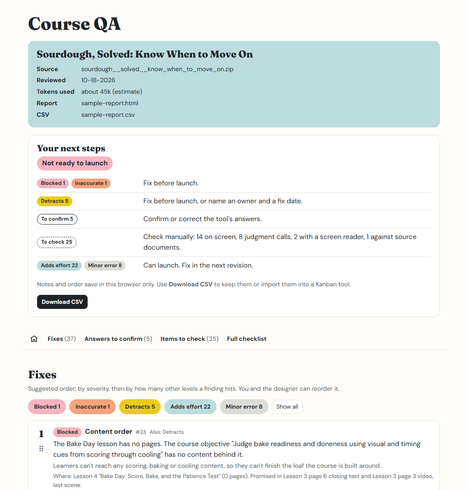

Course QA that starts with the learner
A free Claude skill that reviews your eLearning course or slide deck for accessibility and learning design, then hands back a checklist you validate.

What it does
You give Claude an exported course or a PowerPoint deck. It reads everything a learner would see and hear and checks it against 53 criteria. You get back an HTML report, ranked by how much each problem affects the learner, and a CSV you can drop into a Kanban board.
It answers what it can from the files. When it isn't sure, it drafts an answer for you to confirm. Anything it can't check from the files, like keyboard use or how a screen reader sounds, is left for you, with a note on what to look at.
Accessibility
Contrast, alt text, headings, captions, link text, keyboard and zoom checks, slide reading order.
Learning design
Objectives, whether the quiz tests what was taught, wrong answers that are too easy, feedback that explains why.
Relevance
Real scenarios, tools explained, broken links, outdated details, inconsistent product names.
Severity is judged by the learner
Every finding gets one level, chosen by asking one question: how does this affect the learner?
| Level | What it means for the learner | Launch |
|---|---|---|
| Blocked | They can't access the content. | Must be fixed before launch |
| Inaccurate | The content is wrong, and following it could cause a mistake on the job. | Must be fixed before launch |
| Detracts | They get less of the content, or a worse version of it, than other learners. | Fix before launch, or name an owner and a fix date |
| Adds effort | They get the same content but have to work harder for it. | Can launch; fix in the next revision |
| Minor error | Something is incorrect but doesn't block understanding. Each one wears down trust. | Can launch; fix in the next revision |
Wrong content about money, legal and compliance matters, safety and security, anything client-facing, or steps that can't be undone is always Inaccurate. See the full severity rules.
Where it runs
Claude desktop app
Upload the skill once, then attach a course to any chat. No installs.
claude.ai
The same upload works on the web, since skills belong to your account.
Claude Code
For people comfortable in a terminal. Install it as a plugin or a folder.
All three were tested on the same course and found the same core problems. The guide walks through each one.
Your course stays yours
- Your course content is sent to Claude as part of the review, like anything else you share in a Claude chat. Check your organization's rules before reviewing confidential courses.
- To check links, it tries to visit each link in the course. The app asks your permission first.
- Nothing else leaves your computer. The skill doesn't track usage, and the report works offline.